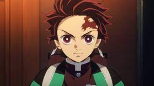

O personagem principal de Demon Slayer se chama Tanjiro Kamado
Aparência
Tanjiro é um jovem de pele bastante bronzeada e físico atlético. Ele tem cabelo preto despenteado com pontas cor de vinho, penteado para trás para expor a testa, e olhos grandes e vermelho-escuros com pupilas brancas que parecem mais claras ao redor da parte inferior de suas íris. Ele também tem uma cicatriz no canto superior esquerdo da testa, que recebeu quando protegeu seu irmão mais novo da queda de um braseiro. A cicatriz originalmente parecia um arranhão até sua luta com o Oni da Mão durante a Seleção Final, após o qual se transforma em sua Marca de Caçador de Onis. É notado que suas mãos são visivelmente mais ásperas para alguém de sua idade, como resultado de seu treinamento rigoroso sob Sakonji Urokodaki. Tanjiro parece notavelmente semelhante em aparência a seu ancestral Sumiyoshi, possuindo a mesma estrutura facial, olhos e penteado que ele, embora o cabelo de Sumiyoshi fosse mais longo na altura dos ombros e era amarrado em um rabo de cavalo atrás de sua cabeça.
Tanjiro aparece pela primeira vez vestindo um haori xadrez preto e verde espuma-do-mar sobre uma túnica branca e calças pretas. Ele ocasionalmente usa um lenço turquesa e é visto com faixas brancas circulares em volta das panturrilhas. Ele também usa um par distinto de brincos hanafuda, com a imagem de uma flor branca e vermelha. Seu cabelo também é mantido preso em um pequeno rabo de cavalo ou coque; enquanto ele treina com Sabito e Makomo, seu cabelo cresce até os ombros.

Habilidades Físicas
Força Aprimorada: Após seu treinamento no Monte Sagiri, Tanjiro ganhou força e velocidade aprimoradas e demonstrou um grande uso delas, como visto quando ele saltou o dobro de sua altura sobre o Oni da Mão, que matou os discípulos de Sakonji, durante a Seleção Final. Sua testa é notadamente robusta, já que ele é capaz de ferir Sanemi Shinazugawa, o Hashira do Vento e até mesmo atordoar momentaneamente Gyutaro, membro de 6ª Classe.
Velocidade e Reflexos Imensos: Tanjiro pode acompanhar Akaza, membro de 3ª Classe e um Oni incrivelmente rápido, que pode se mover em velocidades subsônicas, durante seu segundo encontro. Depois de despertar sua Marca de Caçador de Onis, a velocidade de Tanjiro aumenta ainda mais ao ponto que mesmo Akaza não pode reagir a tempo e processar seus movimentos. Após despertar sua Marca do Caçador de Demônios, Tanjiro ganha reflexos extremamente afiados, esquivando-se e reagindo aos ataques de Akaza e do Rei Demônio, Muzan Kibutsuji. Isso também foi mostrado quando ele ficou extremamente furioso, quando ele se tornou capaz de se esquivar facilmente e contra-atacar os ataques de Daki enquanto ela estava em sua forma mais fraca, sem que Daki fosse capaz de machucá-lo.
Energia e Resistência Imensos: Tanjiro tem uma energia e uma resistência incríveis. No Arco da Contagem Regressiva do Nascer do Sol, ele durou um dos mais longos, quase uma hora se esforçando até o limite físico e mental, enquanto ainda era capaz de tolerar e suprimir todos os danos e ferimentos que sofreu com os ataques de sangue de Muzan Kibutsuji e seus poderosos golpes físicos.
Habilidades Mentais
Intelecto Genial: Mesmo antes de encontrar um membro dos Doze Kizuki, Tanjiro demonstrou a habilidade de ser incrivelmente sagaz e analítico enquanto lutava contra Onis, sendo capaz de discernir suas habilidades e encontrar as contramedidas adequadas. Um exemplo é durante a luta contra Akaza, ele foi capaz de decifrar e deduzir sua misteriosa habilidade de sentir a localização de seu oponente e ainda foi capaz de buscar em suas memórias por uma contramedida adequada. No entanto, essa habilidade não se limita à luta, já que ele pode encontrar uma forma de amenizar suas próprias fraquezas como na luta com Kyogai, quando suas costelas se machucaram, e Gyutaro, quando ele estava extremamente exausto lutando contra Daki.
Intelecto Tático: Tanjiro possui uma capacidade de pensamento e uma inteligência incríveis e inatas. Ele demonstrou isso principalmente por meio de combates, onde é capaz de conceber múltiplas estratégias de batalha, discernir as habilidades e poderes de seu oponente e encontrar fraquezas em todos eles enquanto se engaja em combates difíceis.
Habilidades Sobrenaturais
Marca de Caçador de Onis: Tanjiro desperta sua marca pela primeira vez enquanto lutava com o membro de 6ª Classe, Gyutaro, e mais uma vez contra as formas divididas de Hantengu, o membro de 4ª Classe. Mais tarde, a marca reaparece durante sua revanche contra o membro de 3ª Classe, Akaza. Em seu estado marcado, a força, velocidade e tempo de reação de Tanjiro aumentam drasticamente. Em sua luta com Akaza, depois de ganhar acesso ao Mundo Transparente, além de sua Marca de Caçador de Onis, Tanjiro é capaz de se mover rápido o suficiente para cortar a cabeça de Akaza sem lhe dar tempo para reagir, um movimento que teria matado Akaza se não era para ele superar sua fraqueza pela decapitação de Nichirin Blade. No entanto, deve-se notar que a habilidade de detecção de bússola de Akaza dependia dele sentir o espírito de batalha de seu oponente, e Tanjiro não foi capaz de mostrar nenhum espírito de batalha enquanto realizava este ataque. A desvantagem de seu estado marcado é que Tanjiro só pode entrar nele em raras ocasiões, e ele só pode usá-lo por um período muito curto, pois causa exaustão em seu corpo como comprovado em suas batalhas contra os escalões superiores.
Lâmina de Nichirin Vermelho: Durante sua segunda batalha contra Muzan, Tanjiro ganha a habilidade de tingir sua Lâmina de Nichirin em uma cor vermelha carmesim, dando a ela a habilidade de dificultar a regeneração aprimorada de Onis.
Mundo Transparente (透すき通とおる世せ界かい Sukitōru Sekai?): Como seu pai, ele ganhou a habilidade de prever o ataque do oponente sem mostrar nenhum espírito de batalha e senso de sede de sangue, ganhando imunidade de qualquer um que possa senti-los. Nesse estado, sua intuição de movimento e velocidade de evasão aumentam dramaticamente.
Habilidades Diversas
Sentidos Aprimorados: Como todos os Caçadores de Onis habilidosos, Tanjiro tem sentidos aprimorados além dos humanos normais, sendo capaz de detectar e rastrear presenças demoníacas e lutar com incrível precisão e eficiência.
Cheiro Aprimorado: Tanjiro tinha um olfato aguçado antes mesmo de passar pelo treinamento com a espada. É forte o suficiente para ele sentir o cheiro da "linha de abertura" - a ligeira pausa no movimento de um inimigo que lhe permite uma abertura para atacar - e distinguir entre as espécies, bem como sua posição aproximada. Depois de treinar essa habilidade durante seu tempo como um Caçador de Onis, Tanjiro adquiriu a habilidade de cheirar emoções, bem como rastrear objetos, humanos e Onis por longas distâncias. Durante seu treinamento com Yoriichi Tanjiro despertou a habilidade de prever movimentos de seus oponentes através do olfato, que pode ser detectado mais rápido do que a 'linha de abertura'.
Ação Repetitiva: Uma técnica praticada por poucos membros dos Caçadores de Onis, permite que uma pessoa alcance os mesmos efeitos da Respiração de Concentração Total, usando movimentos pré-definidos repetidos ou lembrando de sentimentos intensos para abrir os cinco sentidos e aumentar sua concentração, prolongando o poderes físicos do corpo por um longo período prolongado. É possível usar a Ação Repetitiva e a Respiração simultaneamente, concedendo ao usuário uma força imensa, capaz de rivalizar com as Luas do Demônio Superior. Tanjiro aprendeu essa técnica após consultar Genya Shinazugawa. Ele aumenta sua concentração ao máximo, lembrando-se dos rostos de seus entes queridos e repetidamente lembrando a frase de Kyojuro Rengoku "Mantenha seu coração queimando".
Vontade Indomável: Como todos os Caçadores de Onis, Tanjiro possui uma vontade e espírito destemidos, sendo capaz de lutar e se engajar na batalha contra inimigos mais fortes do que ele com sua pura vontade de matar Onis e proteger sua irmã. Já no Arco do Monte Natagumo, Tanjiro estava disposto a sacrificar sua vida por sua irmã.
Talento de Combate Inato: Esta característica de Tanjiro foi apontada por Giyu durante seu primeiro encontro, no qual Tanjiro habilmente traçou um plano para atacar Giyu de surpresa, investindo contra ele, não mostrando ao Caçador de Onis que ele estava desarmado, e derrubando Giyu com um machado que ele tinha jogado no ar de antemão. O ataque falhou, mas Giyu ainda estava muito impressionado com o plano de Tanjiro, especialmente considerando que ele era um novato na época.